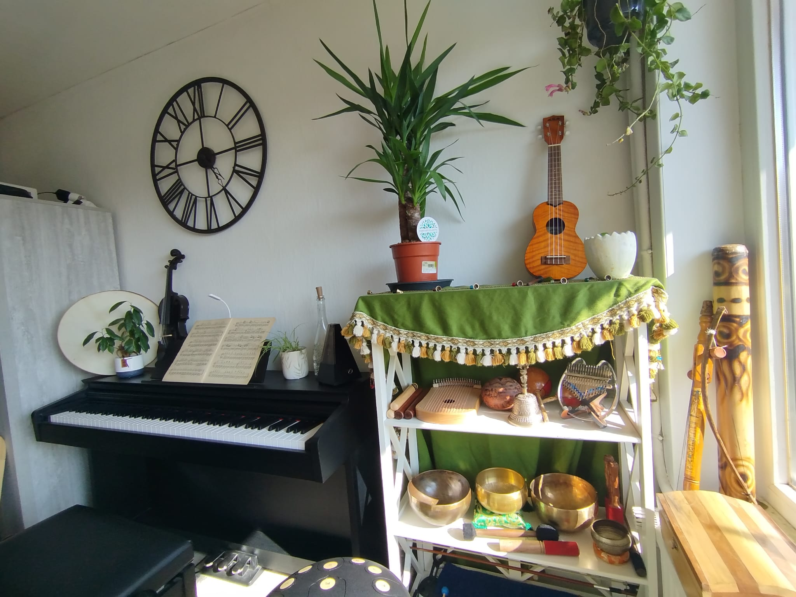

Qu'est-ce que la musicothérapie active et réceptive ?
Il existe deux grandes approches en musicothérapie. L'une invite à jouer, l'autre à écouter. Les deux transforment.
Lire l'article →
Un accompagnement thérapeutique par le son et la musique, pour retrouver l'équilibre, apaiser les émotions et révéler vos ressources intérieures.
Une approche douce et ancrée dans le soin
Je suis Enza Duhem, musicothérapeute en formation. Chaque jour, je vois l'impact que peut avoir la musique sur nous. Je ne cesse de me dire que cette discipline a sa place et peut réellement aider chacun de nous, quelque soit notre âge, notre culture, nos problématiques et nos objectifs.
Me contacterLa musicothérapie est une pratique de soin, de relation d'aide, de soutien, ou de rééducation, utilisant le son et la musique à l'intérieur du lien thérapeutique afin de soutenir le développement, la santé et le bien-être.
Empathie, authenticité et non-jugement — le fondement de tout accompagnement thérapeutique.
Adaptation à l'état émotionnel initial de la personne pour créer une rencontre juste et sécurisante.
Aucune compétence musicale n'est requise. Chaque être humain porte en lui une relation naturelle au son.
Aide à l'interprétation de ce qui émerge en séance, mais n'interprète jamais à votre place.
Chaque séance est unique, pensée pour la personne qui me fait confiance.
La musicothérapie est une clé universelle pour tous, car elle contourne le langage en se concentrant sur le non-verbal. Elle stimule toutes les zones du cerveau — même les zones lésées (plasticité cérébrale) — et peut s'adapter à l'identité profonde de chacun.
Que l'on soit un bébé prématuré ou une personne en fin de vie, la musique nous ramène à notre humanité fondamentale : Sentir, vibrer et être en lien avec l'autre.
Régulation physiologique, stimulation de la succion, enveloppement sonore, soutien du lien parents-bébé.
Ouverture à la communication, structuration, gestion sensorielle, canalisation de l'énergie, évolution de l'estime de soi, expression émotionnelle, conscience du corps, plaisir et détente.
Catharsis, rupture de l'isolement, (ré)ancrage, récupération du langage, rééducation motrice, détournement de l'attention, relaxation profonde.
Stimulation de la mémoire, réduction des troubles du comportement, maintien de l'identité, initiation du mouvement.
Apaisement de la douleur, régulation respiratoire, soutien à l'entourage, facilitation du lâcher-prise.
Accompagnement personnalisé en tête-à-tête. Idéal pour travailler sur des problématiques précises : anxiété, deuil, burnout, troubles du sommeil.
40 € 60 minutes · À domicileSéances en groupe de 4 personnes maximum. Créer, écouter et résonner ensemble pour sortir de l'isolement émotionnel.
35 € 75 minutes · À domicile · Vaulx3 séances individuelles pour une première exploration. Idéal si vous souhaitez tester avant de vous engager dans un suivi régulier.
110 € 3 × 60 min · Économisez 10 €Des articles pour démystifier la pratique, vous donner des clés de compréhension et vous aider à savoir si la musicothérapie peut vous correspondre.
On entend souvent dire que la musique « fait du bien ». Mais ce raccourci cache quelque chose de bien plus précis et de bien plus puissant. La musicothérapie n'est pas une distraction — c'est une intervention clinique qui s'appuie sur des mécanismes neurobiologiques documentés.
Lire l'article →Des articles pour démystifier la pratique, vous donner des clés de compréhension et vous aider à savoir si la musicothérapie peut vous correspondre.
Il existe deux grandes approches en musicothérapie. L'une invite à jouer, l'autre à écouter. Les deux transforment.
Lire l'article →Le rythme, la fréquence, le timbre — chaque élément musical a un impact mesurable sur notre corps et nos émotions.
Lire l'article →La musique active des zones du cerveau liées à la mémoire émotionnelle qui résistent souvent aux maladies neurodégénératives.
Lire l'article →Pour les personnes autistes, la musique peut être un espace de communication alternatif, structurant et sécurisant.
Lire l'article →La musicothérapie offre un espace pour mettre en sons ce que les mots ne peuvent pas encore exprimer dans la peine.
Lire l'article →Aucune compétence musicale requise. Voici ce que vous pouvez attendre avant de commencer.
Lire l'article →Absolument pas. La musicothérapie ne requiert aucune compétence musicale préalable. Nous utilisons la musique comme outil thérapeutique, pas comme discipline artistique. L'important est votre présence et votre ouverture.
Non, les séances ne sont pas remboursées.
Cela varie selon les objectifs et la sensibilité de chacun. Un soulagement notable est souvent perceptible dès 3 à 5 séances. Un suivi en profondeur se déroule généralement sur 3 à 6 mois, à raison d'une séance par semaine.
Dans le cadre de ma formation, je peux intervenir ponctuellement en structures (maisons de repos, écoles spécialisées, centres de soin) dans la région de Tournai. N'hésitez pas à me contacter pour en discuter.
Lieu
À domicile
Vaulx, Tournai (Belgique)
Horaires
Sur rendez-vous
« La musique commence là où s’arrête le pouvoir des mots. »
—
Richard Wagner